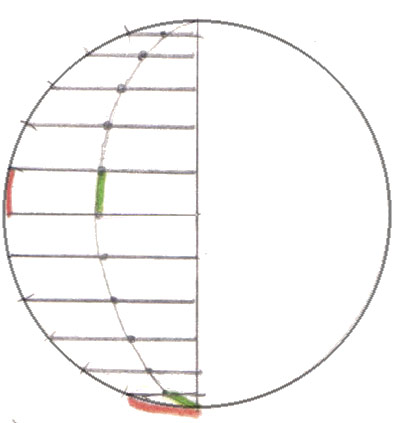
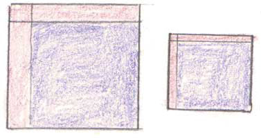
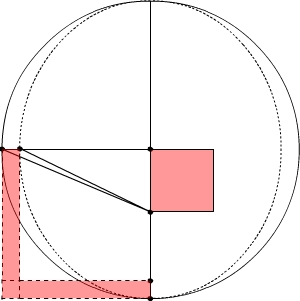
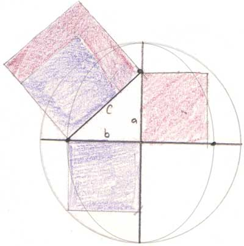
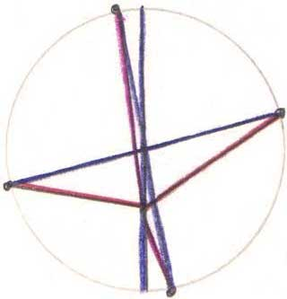
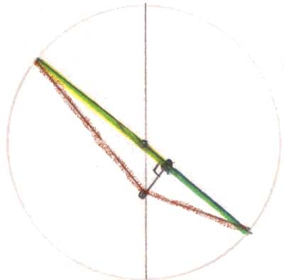
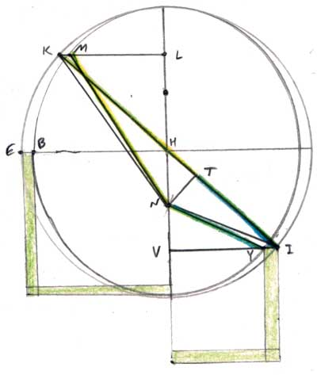
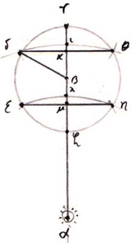
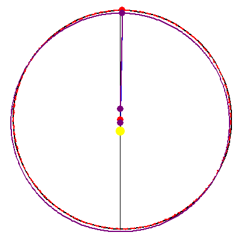
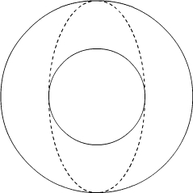

Chapter 59
Now that we have determined the true, elliptical path of the planet determined in chapter 58, the question remains: how to apply mathematics to this means of generation − how can we know where the planet will be? Can the distances from the planet to the sun be added without the errors discussed in earlier chapters where the planet moved in a circle? Kepler introduces several protheorems to get to his demonstration, most of which will be presented here.

I, II, III
Protheorem I states that the same ratio holds, between the perpendiculars to the ellipse and to the circle, no matter where they are. That is, the ratios between the red-orange and green lines is the same at different points on the figure.
Protheorem II states that the ratio of the entire area of the ellipse to the entire area of the circle is the same as this ratio between lengths in I.
Protheorem III tells us that this same ratio holds between the red-orange and green areas. Therefore, to determine how to divide the area of an ellipse in a given proportion, we need only to find how to divide the area of the circle in that ratio, a much easier task (although we’ll see exactly how easy it is in chapter 60).

IV
“If the circle be divided into any number of equal arcs by perpendiculars such as these, the ellipse is divided into unequal arcs, whose ratio [to the arcs of the circle] is greatest near the vertices and least in the middle positions.”
At the middle longitudes, the elliptical arcs are nearly as long as the circular arcs, while at the apsides, the elliptical arcs are significantly shorter.
V
The entire elliptical circumference is approximately the arithmetic mean between the circle on the greater diameter and the circle on the smaller diameter.
This is approximately true, although not exactly. The arithmetic mean is closer to the circumference than is the geometric mean, which Kepler goes through in some detail in chapter 48. Calculations give the following numbers for an ellipse with eccentricity of 9265:
| Actual circumference | 626,968 | |
|---|---|---|
| Arithmetic mean | 626,967 | |
| Geometric mean | 626,966 | (see footnote) |
VI

The gnomons of squares divided proportionally are to one another as the squares.
The red gnomon on the left is larger than that on the right, in the same ratio as the purple square on the left is larger than that on the right.
 VII
If from the end of the shorter semidiameter on the circumference of an ellipse, a line equal to the longer semidiamter be extended, ending at the longer semidiamter, the distance between that point of intersection and the center is the side of a square equal to the gnomon that the square of the longer semidiameter places about the square of the shorter semidiameter.
(right) Another view. The hypothenuse of this triangle is equal in length to the longer semidiameter. The square on the hypothenuse, with the purple square of the shorter semidiameter removed, leaves the red gnomon, the area of the side on the diameter. This technique is the way you can determine the location of the foci of an ellipse, as you can see in the following animation.
If you draw an ellipse by using a piece of string held still at two points (the foci), a singularity appears when you create the points on the major axis -- it is clear that the total length of string is equal to the major axis. You can use this to find the foci. (Pressing the spacebar pauses the motion.)

VIII
If a circle be divided into any number (or an infinity) of parts, and the points of division be connected with some point within the circumference of the circle other than the center, and also be connected with the center, the sum of the lines drawn from the center will be less than the sum of those from the other point.
Here, the purple line connecting two points opposite the center is shorter than the sum of the red lines connecting those points via the focus. This came up in chapter 40 as an objection to using area to measure the sum of distances: the sum of the distances is larger than the area of the circle.

IX
If, on the other hand, instead of the lines from the point other than the center, those lines be taken which are bounded by perpendiculars drawn from that point to the lines which are drawn to the center − that is, if, in the terms of ch. 39 and 57, the diamteral distances are taken in place of the circumferential ones − then their sum will equal the sum of those drawn from the center.
If, instead of the red lines, the yellow-green and blue-green ones are used, their sum is a diameter. Doing this every degree around the circle makes a sum of distances equal to the sum of those drawn from the center.
Kepler further demonstrates (even if the translator doesn’t seem to agree) that the sum of the distances over a portion of the circle is measured by the area swept out of that portion of the circle.
X
Now, you may wonder: Kepler uses equal divisions of the circle in protheorem IX, resulting in unequal divisions of the ellipse. What if we were to divide the ellipse evenly, and look at the sum of the distances of the planet from the sun along equal arcs of the ellipse? Would this sum be measured by the area? For reasons similar to those given in protheorm VIII, the answer is no.
[T]he area of the ellipse is not suited to measuring the sums of distances of equal arcs of its elliptical circumference.

XI
With these preliminaries completed, I shall now proceed to the demonstration.
If an ellipse divided by perpendiculars dropped from equal arcs of the circle, as in protheorem 4 above, the points of division of the circle and the ellipse be connected to the point that was found in protheorem 7, I say that those that are drawn to the circumference of the circle are the circumferential distances, while those that are drawn to the circumference of the ellipse are the diametral, which are established at an equal number of degrees from the apsides of the epicycle.
This means of constructing the ellipse is that of chapter 58. By construction, NM = KT. To understand what is meant by circumferential and diametral distances, see at the figure on the left:
I say that NK is the circumferential distance αδ (this was proven in ch. 2) and NM is the diametral distance ακ.
So you can see that while δ is on the circumference of the epicycle, κ is on the line cutting its diameter in this diagram first introduced in chapter 39. Remarkably, in using the construction of chapter 58, the distances from the sun to points on the ellipse (NM), can be added to get the same area as that of the circle (protheorem IX). This means that we can unreservedly use the area of the circle as a true measurement of the sum of the distances! Since the sum of the distances measures the time expended in passing through them, area has now become a true measure for time. Remember, Kepler had not previously believed area to be an exact measure of time before this moment!
XII
Again, it is also clear from the same that
The area of the circle, both as a whole and in its individual parts, is the genuine measure of the sum of the lines by which the arcs of the elliptical planetary path are distant from the sun's center.
XIII
Some would raise the objection that equal elliptical arcs should be taken, rather than the equal circular arcs presented here.
The reply is made that the arc of the ellipse on which the times are measured by the area AKN should by all means be divided into unequal parts, with those near the apsides being smaller.
Kepler realizes that were he not to use unequal arcs, the planet would be made to move too fast at the apsides. Also, the sum of the distances of the planet at the middle longitudes is equal to the sum of its distances at the apsides (by construction), yet if the arcs were all equal, the sum of the areas would be greater at the apsides than at the middle longitudes, even though the sum of the distances is the same. This gives a reason for having shorter arcs at the apsides, but must they be shorter in exactly the way Kepler has constructed them? This he proves next.
XIVThis one is tough! More will be said here in the future. For now, readers are refered to the Epitome of Copernican Astronomy, Book V, Part I, ch. 4, where Kepler gives a much clearer explanation, expressing regret at the difficulty of his exposition in the New Astronomy.
The Epitome of Copernican AstronomyIt is useful to insert here a refinement in Kepler’s thinking expressed in the Epitome: he reconsiders his distance hypothesis of chapter 33. He divides the motion of the planet into two components: the motion around the sun, caused by one solar virtue, and the libration towards or away from the sun, caused by another power. When these two components are considered separately,
the delays of time ought to be equal not to equal arcs as such, but to their equal progressions around the sun, at the same distance from the sun.
Although the arcs on the ellipse are now divided unevenly, they correspond to equal divisions of the periodic motion, excluding libration. Therefore, it is correct that the arcs be greater in the middle longitudes, since that is where the power of libration is the greatest.
XVSince it has been demonstrated that the elliptical area is the apropriate measure of time, and the circular areas are proportional to the elliptical areas (protheorem III), the area swept out on the circle can be used to measure time. This is much more convenient than directly using the area of the ellipse!
Confirmation
When Kepler tries out this hypothesis, he finds that, instead of being up to 5½′ off like the puff-cheeked hypothesis,
“when NM was so applied as to end on KL, then when the equated anomaly MNA was applied to the mean anomaly AKN, it agreed exactly with the vicarious hypothesis.”
Here is an animation of the vicarious hypothesis superposed upon the true elliptical orbit of chapter 58. The vicarious hypothesis is drawn in purple. There are three purple dots and a circle. The circle is the path, the two dots on the line of apsides the center and the equant, and the small spot on the path is the planet's position as given by the vicarious hypothesis. The true values are on the right, and the match is perfect: the sun sees the planet as given in chapter 58 at the same sidereal longitude as the vicarious hypothesis would place it. Since it is hard to see, another diagram with exaggerated eccentricity is given below.
Difficulty!
If you thought this was a difficult chapter, you are not alone! Kepler concludes:
There are some matters which no mind, however gifted, can present in such a way as to be understood in a cursory reading. There is need of meditation, and a close thinking through of what is said. (p.591)
Footnotes
V
Other calculations for ellipses of large eccentricity show more clearly the difference between the arithmetic mean and the actual circumference of the ellipse. For example, an ellipse with semiminor axis of 1 and semimajor axis of 2 gives the following circumferences:
| Actual circumference | 9.68845 |
|---|---|
| Arithmetic mean | 9.42478 |
| Geometric mean | 8.88577 |
Here, we can see that Kepler is correct in rejecting the geometric mean, in favor of taking the arithmetic mean of the inscribed and circumscribed circles, but this is still not perfectly correct. Determination of the exact circumference leads us into Leibniz’s calculus and elliptical functions. See chapter 48 for more on this.
| Next [Chapter 60] |